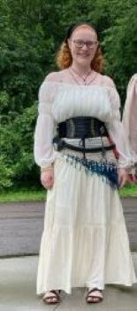
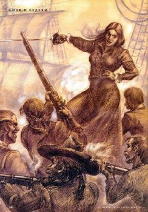

What’s the difference between historically accurate and not?
Making historically accurate clothing is not just finding a pretty material, cutting the right shapes, and putting them together to fulfill your dream fantasy outfit. It’s so much more. Many start with the question “what’s the difference?” And the answer may seem simple at first: make it look like old photos or paintings. This is a good place to start, but we will go much deeper than that!
What’s wrong with my dream fantasy outfit?
There could be nothing wrong with your dream design, but if your initial thought looked anything like mine…we have a little work to do. If you’re like me, you might’ve gotten your inspo from watching your favorite fantasy film or reading your favorite fairytale. These can be good starters, but you could end up with something like this:

It’s cute and fun and might tick all the boxes on your wish list. But if one of those boxes is historical accuracy…let’s see what we can do.
What’s it gonna look like?
We can certainly start with your dream and tweak something here and there to make it look historical. And with it looking authentic, you may even feel cooler than you thought possible! By using the fantasy outfit above as inspo, we can then find some further inspo that takes it a step in the right direction:

This is a good start, but explore my other pages to learn more about taking your project back in time.